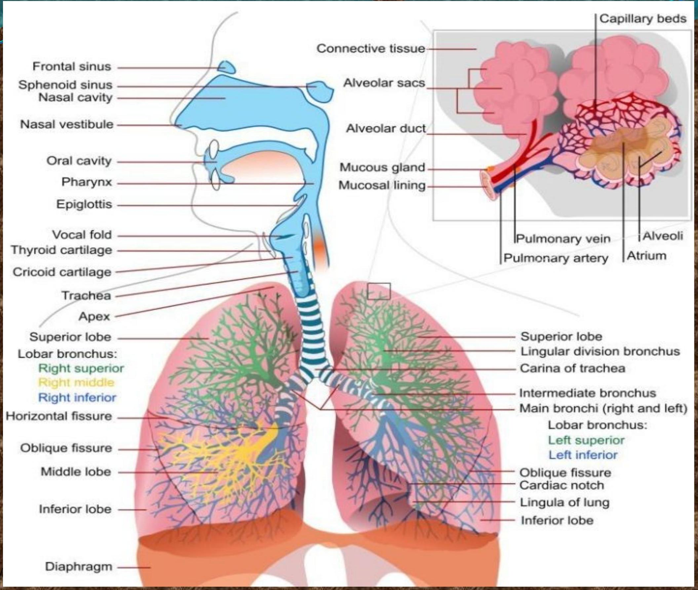

The Role of Physiotherapy in Pulmonary Nursing
Introduction and Anatomy Review
The respiratory system is composed of the upper and lower respiratory tracts, which are together responsible for ventilation. This process includes external respiration (gas exchange between blood and lungs) and internal respiration (gas exchange between cells and blood).
Upper Respiratory Tract
Functions include protecting the system from infection, warming and filtering inspired air, and humidification. Structures include:
- Nose: Entry point for air.
- Sinuses: Air-filled cavities that serve as resonating chambers and lighten the skull.
- Pharynx: A tube-like structure connecting the nasal/oral cavities to the larynx.
- Larynx (Voice Box): Links the pharynx and trachea, responsible for voice production and protecting the lower airway.
- Trachea (Windpipe): Passageway between the larynx and bronchi, kept open by C-shaped cartilage rings.
Lower Respiratory Tract
Includes the lungs, which are elastic structures lined with pleura. The interior of the lungs is composed of bronchi, bronchioles, alveoli, connective tissue, and blood/lymph vessels.
- Bronchi and Bronchioles: The trachea divides into primary bronchi, which progressively subdivide into smaller airways.
- Alveoli: The site of gas exchange. These distal air sacs are surrounded by a network of capillaries.
Physiology of Respiration
Ventilation
Ventilation is the movement of air in and out of the airways, driven by the muscles of respiration (intercostal muscles and diaphragm).
- Inspiration: An active process where muscle contraction increases thoracic cavity capacity, reducing pressure and drawing air into the lungs.
- Expiration: A passive process where muscle relaxation and elastic recoil of the lungs expels air.
Gaseous Exchange
Exchange of gases between alveolar air and capillary blood occurs via diffusion. Each gas moves along its pressure gradient, with O₂ moving into the blood and CO₂ moving out.
Physiological Variables
- Elasticity: The ability of the lung to return to its normal shape after each breath.
- Compliance: A measure of the distensibility of the lungs (the effort required to inflate them).
Control of Respiration
Respiration is controlled both involuntarily by the respiratory center in the brain stem (medulla and pons) and voluntarily. Chemoreceptors (central and peripheral) respond to changes in O₂ and CO₂ partial pressures to regulate breathing.
Tuberculosis (TB)
Tuberculosis is an infectious bacterial disease caused by Mycobacterium tuberculosis, an acid-fast rod-shaped bacillus. It is transmitted through aerosolized infected droplet nuclei. The initial lesion (tubercle) may heal, remain dormant, or progress to necrosis and cavitation.
Risk Factors
- Exposure: Duration of contact, poor ventilation, and high concentration of infectious TB in the air.
- Developing Disease: Extremes of age, HIV infection, diabetes, alcoholism, and immunosuppressive treatments.
Clinical Manifestations
- Persistent cough (> 3 weeks)
- Blood-stained sputum (hemoptysis)
- Night sweats
- Weight loss > 10%
- Chest pain
- Shortness of breath
Extra-pulmonary TB can affect lymph nodes, pericardium, CNS (meningitis), intestines, and bones.
Diagnosis and Management
Diagnosis is established through sputum smear/culture, chest x-ray, and nucleic acid detection tests (PCR).
Management priorities include administrative controls (early diagnosis), environmental controls (ventilation), and personal protective equipment. The cornerstone of treatment is Directly Observed Treatment, Short-course (DOTS) using a combination of first-line anti-TB drugs.
| Phase | Duration | Drugs Used |
|---|---|---|
| Intensive Phase | Daily for two months | Two months of daily Ethambutol (E), Rifampicin (R), Isoniazid (H), Pyrazinamide (Z) |
| Continuation Phase | Daily for six months | Six months of daily Ethambutol (E) and Isoniazid (H) OR Four months of daily Rifampicin (R) and Isoniazid (H) |
Drug-resistant TB (MDR-TB, XDR-TB) requires specialized, longer-term treatment with second and third-line drugs.
Respiratory Failure
Respiratory failure is an alteration in the function of the respiratory system that causes:
- the partial pressure of arterial oxygen (PaO₂) to fall below 50 mm Hg (hypoxemia)
- the partial pressure of arterial carbon dioxide (PaCO₂) to rise above 50 mm Hg (hypercapnia)
It may be acute, chronic, or combined.
Causes
- Oxygenation Failure: Inability to adequately oxygenate the blood, often due to damage to the alveolar-capillary membrane (e.g., cardiogenic pulmonary edema, shock, trauma).
- Ventilatory Failure with Normal Lungs: Often due to insufficient respiratory center activity (drug intoxication, brain tumor) or insufficient chest wall function (neuromuscular disease, trauma).
- Ventilatory Failure with Intrinsic Lung Disease: Caused by damage to the lung parenchyma and/or airway obstruction (e.g., severe COPD, asthma).
Diagnosis and Management
Diagnosis is based on ABGs, pulse oximetry, and end-tidal CO₂ monitoring.
Management includes:
- Oxygen therapy to correct hypoxemia.
- Chest physical therapy and hydration to mobilize secretions.
- Bronchodilators to reduce bronchospasm.
- Steroids to reduce inflammation.
- Diuretics for pulmonary congestion.
- Mechanical ventilation in severe cases.
Atelectasis
Atelectasis refers to the closure or collapse of the alveoli. It can be acute or chronic. When trapped alveolar air is absorbed into the bloodstream and cannot be replaced due to blockage, the lung portion becomes airless and collapses.
Causes
- Retained secretions
- Pain
- Prolonged supine positioning
- Increased abdominal pressure
- Reduced lung volumes (musculoskeletal or neurologic disorders)
- Postoperative effects (anesthesia, pain, impaired cough reflex)
Prevention and Management
The goal is to improve ventilation and remove secretions. Key interventions include:
- Frequent turning
- Frequent suctioning / nebulization
- Physiotherapy (postural drainage and chest percussion)
- Deep-breathing maneuvers (at least every 2 hours)
- Endotracheal intubation and mechanical ventilation may be required in severe cases.